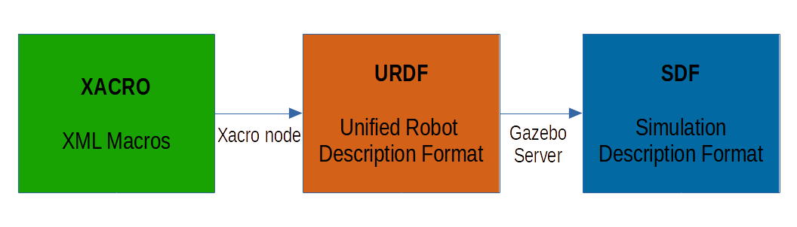
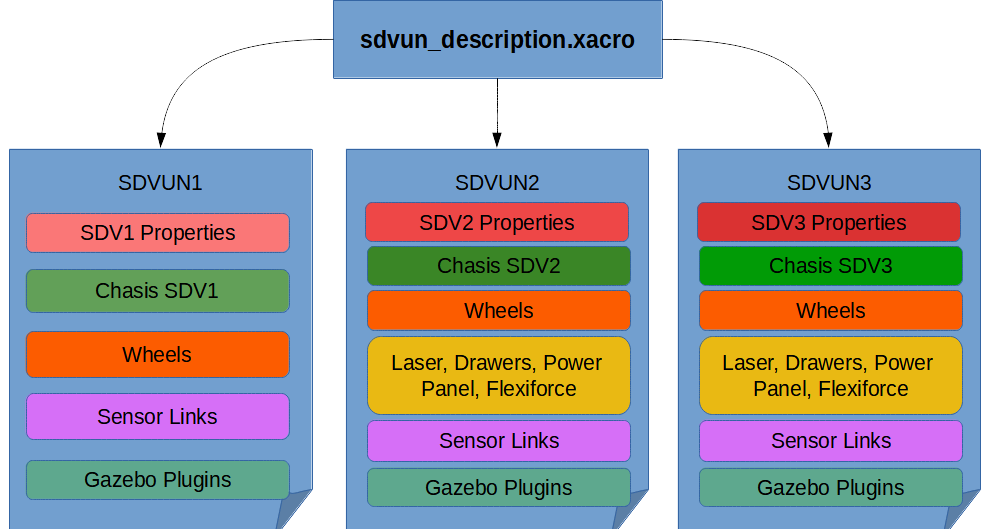

sdvun_description Package¶
sdvun_description is the package that contains 3D models of SDVUN1, SDVUN2 and SDVUN3 robots. Also, contains xacro files that describes these robots using urdf format: these descritions are used by Gazebo to spawn the robot in world and configure all required plugins by virtual sensors and wheel actuators.
XACRO files¶
A xacro file is a XML file that uses macros and can generates an URDF file. This format allows to reuse the code, specially when its necesary to describe multiple robots that share common properties. Also, URDF files (generated by xacro node) are used by Gazebo to spawn the described robot, parsing its content to SDF format.
{kind=link}
Structure¶
Inside sdvun_description package, xacro files are separated to reuse common macros. An antry point called sdvun_description.xacro receives an argument, robot_model, that indicates to xacro node which model must build. Image below shows the posible models that sdvun_description.xacro can generate: evey color square indicates a diferent block of code (or macro) and two squares with same color have same source code.
{kind=link}
Example: SDVUN1, SDVUN2 and SDVUN3 share some blocks like Wheels. This block is actually a macro that comes from macros.xacro file and adds the four wheels to the chasis, using specific propierties of every SDV to know to correct position of every wheel.
Another argument used in sdvun_description.xacro is namespace. This argument allows to prefix all topics that plugins sensors like Laser or IMU requires. This feature is necesary when you want to simulate multiple SDV in Gazebo.
Generating a robot model¶
xacro files are procesed by a xacro node, part of ROS repositories. You can see generated URDF content using this bash command (previusly, go to xacro folder of sdvun_description package):
xacro sdvun_description.xacro
To generate SDVUN2 description, add robot_model argument:
xacro sdvun_description.xacro robot_model:=sdvun2
These commands print the document in the console. In launch files that requires a SDVUN robot description, all printed content is saved in robot_description parameter. If you want to save generated text of xacro node, run next command:
xacro sdvun_description.xacro > sdvun1.urdf